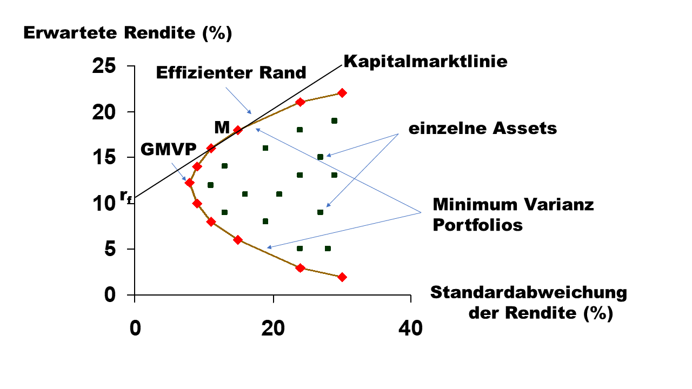

8Risikogesteuerte Ansätze: Verzicht auf die Schätzung der erwarteten Rendite
8.1 Einleitung
Wir haben gesehen, dass sich erwartete Renditen mit dem traditionellen Schätzansatz des arithmetischen Mittels nur sehr ungenau schätzen lassen. Zudem führen insbesondere Schätzfehler in den erwarteten Renditen typischerweise zu extremen und suboptimalen Portfoliogewichten. Daneben produziert die reine Anwendung des klassischen Mittelwert-Varianz Ansatzes häufig Portfolios mit extremen Gewichten. Eine Möglichkeit diese Problematik zu mildern besteht darin, ganz auf die Schätzung erwarteter Renditen bei der Portfoliokonstruktion zu verzichten. Dies führt uns zu den sogenannten risikogesteuerten (oder Riskbalancing basierten) Ansätzen der Assetallokation. Eine risikogesteuerte Portfoliokonstruktion fokusiert auf den Ausgleich der Risikoallokation zwischen den Assets im Portfolio, nicht auf den optimalen Trade-off zwischen Zielrendite und Risiko des Portfolios.
Zusätzlich zur Adressierung der Schätzfehlerproblematik scheint eine Assetklassen-Gewichtung entsprechend des eingegangenen Risikos auch vor dem Hintergrund der Erfahrungen aus der Finanzmarktkrise 2008-2009 sinnvoll zu sein. In der Finanzmarktkrise konnten auch bei gut diversifizierten Portfolios z.T. hohe Verluste und Wertschwankungen beobachtet werden. Infolgedessen wird auch die Wirkung der Diversifikation kritischer gesehen, die in Krisenzeiten aufgrund der dann steigenden Korrelationen geringer ausfällt. Ferner erscheint der Diversifikationseffekt bei zunehmender Anzahl an Assetklassen in den Portfolios begrenzt, sofern diese zusätzlichen Assetklassen eine geringe Liquidität und Transparenz aufweisen, denn hierdurch können zusätzliche, unerwünschte Risiken entstehen.
Vor diesem Hintergrund (und aufgrund der zudem zu beobachtenden unzureichenden Verlässlichkeit langfristiger Renditeprognosen) wurden Steuerungskonzepte entwickelt, die nicht auf der Prognose von erwarteten Renditen, sondern nur auf Volatilitäts- und Korrelationsannahmen basieren. Grundsätzlich orientiert sich dabei die Assetallokation am Risiko. Beispielsweise kann eine Reduzierung des Gewichts einer Assetklasse in den Fällen vorgenommen werden, in denen ihre Volatilität bzw. ihre Korrelation zu einer anderen Assetklasse steigt.
Als Konzept zum Risikoausgleich wurde u.a. der sogenannte Risk Parity-Ansatz entwickelt. Das Ziel besteht dabei, das Risiko der jeweiligen Assetklassen möglichst auszugleichen, so dass nicht eine einzelne Assetklasse (z.B. Aktien) einen Verlust bei einem gesamten Portfolio verursacht. Innerhalb des Risk Parity-Ansatzes lassen sich die beiden Ausprägungen Equal-Risk-Budget- (ERB-) Strategie und Equal-Risk-Contribution- (ERC-) Strategie unterscheiden. Zu alternativen risikobasierten Assetallokations-Konzepten zählen der Global-Minimum-Varianz-Ansatz und der Maximum-Diversification-Ansatz. Die beiden letzteren Ansätze zielen allerdings nicht direkt auf gleiche Risikobudgets bzw. Risikobeiträge ab. Eine weitere Möglichkeit zum Risikoausgleich besteht darin, ein “naives” Portfolio zu bilden, bei dem die Assetklassen gleich gewichtet sind (Equally-Weighted-Ansatz).
Nach der Einleitung wird im nächsten Kapitel zunächst auf die Grundlagen des Risk Parity-Ansatzes eingegangen, bevor anschließend die Equal-Risk-Budget- (ERB-) Strategie und die Equal-Risk-Contribution- (ERC-) Strategie vorgestellt werden. Daran schließt sich die Darstellung der alternativen Riskbalancing-Konzepte Equally-Weighted-, Global-Minimum-Varianz- und Maximum-Diversification-Ansatz an. Nach einer Darstellung der jeweiligen Konzepte wird abschließend im Rahmen einer Fallstudie eine vergleichende Analyse der fünf Ansätze durchgeführt.
8.2 Der Risk Parity-Ansatz
8.2.1 Grundlagen
Eine traditionelle, kapitalbasierte Aufteilung von z.B. 50% Aktienanteil und 50% Anleihenanteil im Portfolio kann dazu führen, dass die Rendite und das Risiko des Portfolios maßgeblich von der Aktienrendite beeinflusst werden, während die Anleihen keinen besonderen Einfluss haben. Somit liegt tatsächlich keine wirkliche Diversifizierung des Portfolios vor. Beim Risk Parity-Ansatz wird dagegen im Vergleich zur traditionellen Assetallokation deutlich weniger in Aktien und mehr in andere Assetklassen investiert. Sollen bei einem Aktien-/Anleihenportfolio beide Assetklassen gleichermaßen zum Gesamtrisiko beitragen (Balanced Risk Portfolio), so müssten Aktien entsprechend einen geringeren Anteil zugunsten der Anleihen im Portfolio enthalten. Somit kann das Risikobudget des Portfolios breiter über andere Anlagen gestreut werden. Entsprechend können Portfoliorenditen erwartet werden, die geringere Volatilitäten aufweisen.
Anders als z.B. die Assetallokation gemäß Portfoliotheorie benötigt der Risk Parity-Ansatz grundsätzlich keine Prognosen bezüglich der erwarteten Renditen. Allerdings müssen ebenfalls Risikokennzahlen und - je nach gewähltem Ansatz - Korrelationen geschätzt werden. Letzteres gilt nicht für die Equal-Risk-Budget- (ERB-) Strategie als erste Ausprägung des Risk Parity-Ansatzes, da die Gewichtung der einzelnen Anlagen im Portfolio in Abhängigkeit von ihrer inversen Volatilität vorgenommen wird. Dagegen sind Korrelationsschätzungen im Rahmen der zweiten Ausprägung erforderlich. Hierbei handelt es sich um die Equal-Risk-Contribution- (ERC-) Strategie.
Wir starten mit der folgenden Definition.
Definition: Ein Portfolio das die Bedingung
\[\begin{equation*}
w_1\partial_1\sigma_p = \cdots = w_N\partial_N\sigma_p,\quad
\sigma_p=\sqrt{w\Sigma w^{T}},\quad
\partial_n\sigma_p = \frac{\partial\sigma_p}{\partial w_n},
\end{equation*}\] erfüllt, wird als Risk Parity Portfolio bezeichnet.
Die zugrundeliegende Idee besteht darin, eine gleiche (oder allgemeiner: eine spezifische Ziel-) Risikobudgetierung über alle Portfolioanlagen hinweg zu erreichen. Es können verschiedene Risikomaße verwendet werden, wir beschränken uns hier auf die Standardabweichung \(\sigma\). Bei der Risikoparität geht es darum, dass jeder Vermögenswert in gleicher Weise zur Gesamtvolatilität des Portfolios beiträgt. Dies wird erreicht, indem eine Identität des Risikobeitrags (RB) aller Assets gefordert wird. Der Ausdruck \(\frac{\partial\sigma_p}{\partial w_n}\) bezeichnet dabei den marginalen Risikobeitrag (MRB) des n-ten Assets. Der MRB kennzeichnet das zusätzliche Portfoliorisiko, das durch eine infinitesimal kleine Erhöhung des Anteils des n-ten Assets im Portfolio entsteht und ist formal definiert als die Ableitung der Standardabweichung der Portfoliorendite \(\sigma_p\) nach dem Anteil \(w_n\). Der RB wiederum ergibt sich als das Produkt von Anteilsgewicht und MRB. Es gelten somit die folgenden Beziehungen:
Die Standardabweichung der Portfoliorendite \(r_p\) ist bekanntermaßen gegeben durch (Beachten Sie: \(w\) ist ein Zeilenvektor):
\[ \sigma_p=\sqrt{w \Sigma w^{T}} \]
Der Risikobeitrag des n-ten Assets errechnet sich als:
D.h., der MRB berechnet sich indem die Varianz-Kovarianzmatrix der Assetrenditen mit dem Anteilsvektor zeilenweise multipliziert und aufsummiert wird. Das n-te Element des (Nx1)-Vektors \(\Sigma w^{T}\) skaliert mit der Portfoliostandardabweichung ergibt dann den marginalen Risikobeitag des n-ten Assets.
Es lässt sich zeigen, dass die Summe der N Risikobeiträge der Portfoliostandardabweichung entspricht:
\[ \sigma_p=\sum_{n=1}^{N} RB_{n} \]
Bezieht man den (absoluten) Risikobeitrag RB auf das Gesamtrisiko dess Portfolios \((\sigma_p)\), so erhält man den relativen Beitrag zum Gesamtrisiko (rRB):
mit \(\beta_n=\) Betafaktor des n-ten Assets bezogen auf die Portfoliorendite.
8.2.2 Equal-Risk-Budget- (ERB-) Strategie
Das Ziel dieser Strategie ist, dass die Risikobudgets für alle Anlagen im Portfolio identisch sind. Es handelt sich hierbei um eine Vereinfachung der oben eingeführten allgemeinen Definition einer Risk Parity Strategie. Unter der Annahme, dass die Standardabweichung das Risikomaß darstellt, werden Risikobudgets der jeweiligen Anlagen als Produkt aus Standardabweichung und Portfolioanteil definiert. Anders als bei den Risikobeiträgen werden somit die Korrelationen zwischen den einzelnen Anlagen nicht mit einbezogen, bzw. es wird angenommen, dass die Korrelationen sämtlicher Assetrenditen mit der Portfoliorendite identisch sind. Für den ERB-Ansatz gilt somit in leichter Abkehr der oben eingeführten Definition die folgende Zielsetzung für alle Anlagen 1 bis N in einem Portfolio (Beachten Sie: das Risikobudget - das Produkt aus Standardabweichung und Portfolioanteil - kann als Risikobeitrag bei perfekter Korrelation interpretiert werden):
Bei der ERB-Strategie werden die Gewichte der Assets somit umgekehrt proportional zu ihren Volatilitäten verteilt.
8.2.3 Equal-Risk-Contribution- (ERC-) Strategie
Ziel der Equal-Risk-Contribution- (ERC-) Strategie ist die Gleichheit der Risikobeiträge der einzelnen Assets zum Gesamtrisiko \((\sigma_p)\) des Portfolios. Dies entspricht genau der im Abschnitt Grundlagen eingeführten Definition einer Risk Parity Strategie. Wie bereits oben gezeigt, lässt sich der absolute Risikobeitrag eines Assets n zum Gesamtrisiko wie folgt bestimmen:
\[ MRB_n= \frac{(\Sigma w^{T})_{n}}{\sigma_p} \]
Der Vektor der marginalen Risikobeiträge \(\partial_{n}\sigma_p\) über alle Assets ergibt sich folglich durch:
Zudem wurde bereits erwähnt, dass die Summe der RBs dem Gesamtrisiko \((\sigma_p)\) gleicht, und der RB eines Assets n den mit dem Anteil \(w_n\) gewichteten MRB entspricht. Sollen daher alle RBs identisch sein, muss folglich gelten:
Da im ERC-Portfolio die absoluten Risikobeiträge identisch sind, gilt dies natürlich auch für die relativen Risikobeiträge \((RB/\sigma_p)\) der N einzelnen Assets. Es folgt (siehe Gleichung (3) oben):
mit \(\beta^{ERC}_n=\) Betafaktor des Assets n in Bezug auf das ERC-Portfolio. Das Anteilsgewicht \(w^{ERC}_n\) kann dann auch wie folgt ausgedrückt werden:
\[ w^{ERC}_n=\frac{1}{N \cdot \beta^{ERC}_n}, \quad \text{wobei für ein ERC-Portfolio gilt:} \quad \Sigma^N_{n=1}w^{ERC}_n=1. \]
Somit ist der Anteil eines Assets umgekehrt proportional zu seinem Betafaktor. Je höher das Beta, desto geringer die Gewichtung im Portfolio und umgekehrt. Entsprechend werden Assets mit einer hohen (geringen) Standardabweichung oder einer hohen (geringen) Korrelation mit der Portfoliorendite geringer (höher) gewichtet.
8.3 Alternative risikogesteuerte Ansätze
Abzugrenzen ist der Risk Parity-Ansatz von weiteren Verfahren, die zur Assetallokation ebenfalls auf die Ermittlung von Renditen verzichten. Dazu zählt insbesondere der Global-Minimum-Varianz-Ansatz, mit dem die risikominimale Kombination der zur Verfügung stehenden Anlagen ermittelt werden kann. Darüber hinaus zählt auch der Maximum-Diversification-Ansatz zu den risikobasierten Assetallokations-Konzepten. Schließlich wird noch die als “naiver” Ansatz zu bezeichnende Equally-Weighted-Strategie als Vergleichsmaßstab herangezogen.
8.3.1 Equally-Weighted- (EW-) Ansatz
Der Equally-Weighted-Ansatz kann als einfachste Form der Diversifikation eines Portfolios bezeichnet werden, weil die Gewichtung jedes der N Assets in einem Portfolio auf die folgende Weise bestimmt wird:
\[ w^{EW}_n=\frac{1}{N} \]
Bei diesem Ansatz spielt die Art der Anlage bzw. welche Assetklassen in das Portfolio aufgenommen werden, keine Rolle. Gleiches gilt auch für die Rendite- und Risikokennzahlen der einbezogenen Assets. Daher ist zu empfehlen, diese Strategie allenfalls als Benchmark zur Beurteilung der Performance von Assetallokations-Strategien heranzuziehen. Wie oben bereits erwähnt, würde z.B. der ERC-Ansatz nur in dem Extremfall identischer Korrelationen zwischen den in das Portfolio einbezogenen Assets sowie gleicher Standardabweichungen der Assets zu einer gleichgewichteten Assetallokation führen. Sind die Risiken in einem Portfolio jedoch unterschiedlich verteilt, führt der Equally-Weighted-Ansatz letztlich zu einer Risikokonzentration, denn alle Assets erhalten das gleiche Gewicht, d.h., sowohl das Asset mit dem höchsten als auch das mit dem geringsten Risiko.
8.3.2 Global-Minimum-Varianz- (GMV) Ansatz
Der Global-Minimum-Varianz-Ansatz resultiert aus portfoliotheoretischen Überlegungen, wobei dasjenige effiziente Portfolio gesucht wird, das das minimale Risiko aufweist. Entsprechend kann dieses sog. Global-Minimum-Varianz-Portfolio durch partielle Ableitung der Funktion der Portfoliovarianz nach den Gewichten der einzelnen Assets n im Portfolio \((w_n)\) und anschließende Nullsetzung ermittelt werden: \(\frac{\partial{\sigma^2_p}}{\partial{w_n}}\)
Fall 1: geschlossene Lösung
Die Gewichte des GMVP lassen sich analytisch bestimmen sofern es keine Nebenbedingungen in Form von Ungleichungen wie dem Leerverkaufsverbot oder Bestandsgrenzen gibt. Die Gewichte des GMVP resultieren dann als Lösung des folgenden Minimierungsproblems:
\[\begin{align*}
\min_{w} &\quad w^{T}\Sigma w \\
\text{u. d. Nb.} &\quad w^{T}\iota = 1,
\end{align*}\]
wobei \(\iota\) den Einheitsvektor bezeichnet. Als geschlossene Lösung ergibt sich:
Beachten Sie, dass \(w^{GMV}\) nicht vom Vektor der erwarteten Renditen \(\mu\) abhängt, d.h., das GMVP kann ohne Kenntnis von \(\mu\) ermittelt werden.
Fall 2: numerische Lösung
In der Realität ist es vielen institutionellen Investoren aufgrund von Anlagerestriktionen häufig nicht möglich, Leerverkäufe (Short Positionen) einzugehen. Um diesen Umstand zu berücksichtigen, muss die Nichtnegativitätsbedingung der Gewichte zum Optimierungsproblem hinzugefügt werden. Eine geschlossene Lösung ist dann nicht mehr möglich.
Grafisch kann das GMV-Portfolio wie in der folgenden Abbildung dargestellt bestimmt werden.

Die Grafik zeigt, dass unter Risiko- und Renditegesichtspunkten Portfolios auf der Kapitalmarktlinie effizienter sind als das GMVP. Soll z.B. das gesamte Portfoliorisiko dem des GMVP entsprechen, so lässt sich dieses auch durch eine Kombination des Marktportfolios M mit der risikolosen Anlage \(r_f\) erreichen, wobei aber hier die erwartete Rendite höher ausfällt.
8.3.3 Maximum-Diversification- (MD-) Ansatz
Zur Maximierung des Diversifikationseffektes in einem Portfolio kann der sogenannte Maximum-Diversification-Ansatz herangezogen werden, der auch als “Most-Diversified-Ansatz” bezeichnet werden kann. Dabei wird der Diversifikationseffekt mit Hilfe der Diversification Ratio (DR) ermittelt (siehe Choueifaty et al., 2013):
Im Zähler der Diversification Ratio steht somit der gewichtete Durchschnitt der Standardabweichungen der einzelnen Assets im Portfolio, während im Nenner die Standardabweichung des Portfolios angegeben wird. Wird ein Portfolio ohne Leerverkaufsmöglichkeiten (“Long-only”) betrachtet und ist für mindestens 1 Anlage im Portfolio \(\sigma_n>0\), so gilt: \(DR\geq 1.\) Falls sämtliche Korrelationen zwischen den Anlagen jeweils 1 betragen, würden sich Zähler und Nenner der Diversification Ratio entsprechen. Andernfalls ergibt sich aufgrund des Diversifikationseffektes im Nenner ein geringerer Wert als im Zähler. Somit misst die Diversification Ratio den Diversifikationserfolg von Anlagen, die nicht perfekt miteinander korreliert sind. Letztlich wird damit der Abstand zwischen zwei Volatilitätsmaßen desselben Portfolios maximiert. Im Zähler wird das Portfoliorisiko für den Fall ohne Diversifikation und im Nenner das (tatsächliche) Risiko mit Diversifikation angegeben.
Das Maximum-Diversification-Portfolio (MD) stellt dasjenige Portfolio dar, das die Diversification Ratio maximiert:
Hinzufügen weiterer Nebenbedingungen (z.B. Bestandsgrenzen, Leerverkaufsverbot) erfordert eine numerische Optimierung.
Für das resultierende Portfolio lässt sich zeigen, dass sämtliche Anlagen im Portfolio mit einem Anteil von \(w_n>0\) eine identische (positive) Korrelation mit dem MD-Portfolio aufweisen. Grundsätzlich kann in diesem Fall die Korrelation für ein Portfolio P mit dem MD-Portfolio als Quotient der jeweiligen Diversification Ratios ausgedrückt werden (Choueifaty und Coignard, 2008, S. 42):
\[ Corr(r_p, r_{MD})=\frac{DR_p}{DR_{MD}}, \]
mit
\[DR_p=\textrm{Diversification Ratio des Portfolios P} \]\[DR_{MD}=\textrm{Diversification Ratio des Maximum-Diversification-Portfolios} \]
Besteht ein Portfolio aus nur einer Anlage n, so ergibt sich hierfür eine Diversification Ratio von 1, so dass in diesem Fall für alle Portfolios (bzw. Anlagen n) im Maximum-Diversification-Portfolio jeweils gilt:
Der Quotient aus \(MRB_n\) und \(\sigma_n\) kann als “Relative Marginal Volatility” oder “Scaled Marginal Volatility” interpretiert werden (vgl. Demey et al., 2010, S. 14 sowie Roncalli, 2014, S. 173).
8.4 Beginn der Fallstudie
Die vorgestellten Strategien sollen anhand eines aus den 4 Assets A, B, C und D bestehenden Beispielportfolios näher beleuchtet werden. Für die Standardabweichungen und die Korrelationen zwischen den Renditen der einzelnen Assets werden die folgenden Beispieldaten Stdev und CorrMatrix zugrunde gelegt:
Code
import pandas as pdimport numpy as npimport numpy.linalg as lafrom scipy.optimize import minimizeTOLERANCE =1e-15import warnings# Ignore all warningswarnings.filterwarnings("ignore")Stdev = np.array([0.18, 0.11, 0.16, 0.24])CorrMatrix = np.array([[1.00, 0.40, -0.10, 0.30], [0.40, 1.00, 0.10, 0.20], [-0.10, 0.10, 1.00, -0.15], [0.30, 0.20, -0.15, 1.00]])
Hieraus lassen sich die folgenden Kovarianzen ableiten.
Wir beginnen mit der Equal-Risk-Budget-Strategie. Die Anteilsgewichte ergeben sich umgekehrt proportional zu den Asset-Volatilitäten: \(w^{ERB}_n=\frac{1/\sigma_n}{\Sigma^N_{j=1}1/\sigma_j}\) und das Risikobudget ist definiert als Produkt von Assetrendite-Standardabweichung und Anteilsgewicht. Die Bestimmung der jeweiligen Anteile \(w_n\) der einzelnen Assets am ERB-Portfolio kann mit Hilfe der nachfolgenden Tabelle gezeigt werden.
Erkenbar ist an diesen Werten, dass offensichtlich Assets mit einem höheren (geringeren) Risiko untergewichtet (übergewichtet) werden. Insofern wird eher in risikoärmere Assets investiert, wobei diese Assets gleichzeitig dazu tendieren ein relativ geringes Beta auzuweisen.
Das Risikobudget als die mit den Portfolioanteilen gewichtete Standardabweichung beträgt somit für jede Anlage 3,9899%. Unter Berücksichtigung dieser Werte lässt sich die gewichtete Varianz-Kovarianz-Matrix (\(w^{T}\Sigma w\)) bestimmen.
Aus der Tabelle kann die Varianz des ERB-Portfolios abgelesen werden. Sie beträgt in diesem Beispiel 0,0087557. Entsprechend beläuft sich die Standardabweichung des ERB-Portfolios auf 9,3572%:
\[ \sigma_{ERB}=\sqrt{0,0087557}=9,35720\%.\]
In der nachfolgenden Tabelle werden die absoluten Risikobeiträge (RB), die relativen Risikobeiträge (rRB), die Kovarianzen der einzelnen Assetrenditen mit der Portfoliorendite, die auf das ERB-Portfolio bezogenen Betafaktoren und die marginalen Risikobeiträge (MRB) dargestellt (die Berechnung erfolgt anhand der Formeln (1)-(3) aus dem Grundlagen Abschnitt):
Code
# Berechnung der absoluten Risikobeitrags: Formel (1) und (2)rb=np.zeros(4)for i inrange(4): rb[i]=(gewicht_erb[i]*Sigma[i,:]*np.asmatrix(gewicht_erb).T)/0.093572# Berechnung der relativen Risikobeitragsrrb=np.zeros(4)for i inrange(4): rrb[i]=rb[i]/np.sum(rb)# Berechnung der Kovarianz der Assetrendite mit der Portfoliorendite: Formel (3)cov_ri_rp=np.zeros(4)for i inrange(4): cov_ri_rp[i]=Sigma[i,:]*np.asmatrix(gewicht_erb).T# Berechnung des Betas der Assetrendite mit der Portfoliorenditebeta_ri=np.zeros(4)for i inrange(4): beta_ri[i]=cov_ri_rp[i]/0.093572**2# und nun noch der marginale Risikobeitragmrb=np.zeros(4)for i inrange(4): mrb[i]=rb[i]/gewicht_erb[i]# Abschließend stellen wir die Ergebnisse zur ERB-Strategie # übersichtlich in einer Tabelle darergebnisse_erb=pd.DataFrame({'absoluter RB (%)': np.round(rb*100,4), \'relativer RB (%)': np.round(rrb*100,4),'Cov(r_i,r_p)':np.round(cov_ri_rp,4),'Beta': np.round(beta_ri,4),'MRB (%)': np.round(mrb*100,4)},index=Assets) ergebnisse_erb.loc['Summe',:2]= ergebnisse_erb.sum(axis=0)ergebnisse_erb
absoluter RB (%)
relativer RB (%)
Cov(r_i,r_p)
Beta
MRB (%)
A
2.7221
29.0909
0.0115
1.3124
12.2804
B
2.8922
30.9091
0.0075
0.8521
7.9737
C
1.4461
15.4545
0.0054
0.6197
5.7991
D
2.2968
24.5455
0.0129
1.4764
13.8154
Summe
9.3572
100.0000
NaN
NaN
NaN
Aus den Ergebnissen der Tabelle ist erkennbar, dass für die einzelnen Assets unterschiedliche Risikobeiträge ermittelt werden können. Diese Unterschiede sind darauf zurückzuführen, dass bei der Ermittlung der Anteile der jeweiligen Assets am Portfolio die Korrelationen zwischen den Renditen der sich im Portfolio befindenden Assets nicht berücksichtigt werden. Somit spielen dabei Diversifikationseffekte offenbar keine Rolle. Dennoch kommen diese Effekte bei den Ergebnissen in der Tabelle zum Tragen.
Die jeweils gewichteten Betafaktoren ergeben in der Summe den Wert 1:
Diese Rechnung zeigt, dass die einzelnen gewichteten Betas den relativen Risikobeiträgen entsprechen.
8.4.2 Equal-Risk-Contribution-Strategie
Nun implementieren wir die ERC-Strategie für die Beispieldaten. Zur numerischen Bestimmung der optimalen Gewichte des ERC-Portfolios über scipy.optimize definieren wir drei Funktionen: - calulate_portfolio_var berechnet die Varianz der Portfoliorendite \(\sigma^2_p\) - calculate_risk_contribution berechnet den Vektor der Risikobeiträge gemäß \(w_n\frac{(\Sigma w^{T})_n}{\sigma_p} \quad \text{für}\quad n=1, ..., N\) - risk_contribution_objective implementiert schließlich die Zielfunktion des allgemein formulierten Minimierungsproblems in Gleichung (5)
Die berücksichtigten Nebenbedingungen sind die Budget-Restriktion und das Verbot von Leerverkäufen, d.h., die Gewichte müssen zwischen 0 und 1 liegen und sich auf 1 summieren.
Code
# ERC Optimierung: Definition benötigter Funktionendef calculate_portfolio_var(w,Sigma):# Funktion zur Berechnung der Portfoliorenditevarianz w = np.matrix(w) # w ist ein Zeilenvektor! return (w*Sigma*w.T)[0,0]def calculate_risk_contribution(w,Sigma):# Funktion zur Berechnung des Risikobeitrags w = np.matrix(w) sigma_p = np.sqrt(calculate_portfolio_var(w,Sigma))# Marginaler Risikobeitrag MRB = Sigma*w.T# Risikobeitrag RB = np.multiply(MRB,w.T)/sigma_preturn RBdef risk_contribution_objective(x,pars):# x bezeichnet den Vektor der gesuchten Portfoliogewichte# die Varianz-Kovarianzmarix ist der erste Bestandteil des Arrays der gegebenen Parameter Sigma = pars[0]# der zweite Bestandteil enthält die Zielrisikoallokation x_t = pars[1] sig_p = np.sqrt(calculate_portfolio_var(x,Sigma)) # Portfoliorisiko risk_target = np.asmatrix(np.multiply(sig_p,x_t)) asset_RC = calculate_risk_contribution(x,Sigma) J =sum(np.square(asset_RC-risk_target.T))[0,0] # Summe der quadrierten Fehlerreturn Jdef total_weight_constraint(x):return np.sum(x)-1.0def long_only_constraint(x):return xx_t = [0.25, 0.25, 0.25, 0.25] # Zielrisikoallokation als Prozentsatz des Gesamtrisikosgewicht_ew = np.tile(1.0/4, 4) # Gleichgewichtung als Startvektor # Nebenbedingungen der Optimierungcons = ({'type': 'eq', 'fun': total_weight_constraint},{'type': 'ineq', 'fun': long_only_constraint})# Optimierungres= minimize(risk_contribution_objective, gewicht_ew, args=[Sigma,x_t], method='SLSQP',tol=TOLERANCE,constraints=cons, options={'disp': False})gewicht_erc = np.array(res.x)
Wir können alles auch in eine sehr elegante Funktion “packen”:
Code
#### Eine elegante Funktion für den gesamten Optimierungsprozess:def get_risk_parity_weights(covariances, assets_risk_budget, initial_weights):# Nebenbedingungen der Optimierung: nur Long-Positionen, die in der# Summe 100% ergeben constraints = ({'type': 'eq', 'fun': lambda x: np.sum(x) -1.0}, {'type': 'ineq', 'fun': lambda x: x})# Optimierung mit scipy optimize_result = minimize(fun=risk_contribution_objective, x0=initial_weights, args=[covariances, assets_risk_budget], method='SLSQP', constraints=constraints, tol=TOLERANCE, options={'disp': False})# Extrahieren der Gewichte aus dem Output der Optimierung weights = optimize_result.x# die Funktion gibt die gesuchten optimalen Gewichte zurückreturn weights
Als Lösung ergeben sich die folgenden Gewichte im ERC-Portfolio:
Erkennbar ist auch am ERC-Portfolio, dass tendenziell Anlagen mit einem höheren (geringeren) Risiko eher untergewichtet (eher übergewichtet) werden (wobei aber zu beachten ist, dass dies nicht generell gilt, weil gleichzeitig auch die Korrelationen untereinander noch zu berücksichtigen sind). Insofern kann davon ausgegangen werden, dass auch bei der ERC-Strategie tendenziell meist eher in risikoärmere Anlagen investiert wird. Für dieses Beispiel ergibt sich die nachfolgende gewichtete Varianz-Kovarianzmatrix.
Die gewichtete Varianz-Kovarianzmatrix führt somit zu einer Varianz des ERC-Portfolios von 0,0085744, was einer Standardabweichung des Portfolios von 9,25984% entspricht: \(\sigma_p=\sqrt{0,0085744}=9,25984\%\).
Wie bei der ERB-Strategie können auch für die ERC-Strategie die absoluten Risikobeiträge (RB), die relativen Risikobeiträge, die Kovarianzen der einzelnen Anlagerenditen mit der Portfoliorendite, die auf das ERC-Portfolio bezogenen Betafaktoren und die marginalen Risikobeiträge in einer Tabelle dargestellt werden:
Code
# Berechnung der absoluten Risikobeitrags: Formel (1) und (2)rb=np.zeros(4)for i inrange(4): rb[i]=(gewicht_erc[i]*Sigma[i,:]*np.asmatrix(gewicht_erc).T)/0.0925984# Berechnung der relativen Risikobeitragsrrb=np.zeros(4)for i inrange(4): rrb[i]=rb[i]/np.sum(rb)# Berechnung der Kovarianz der Assetrendite mit der Portfoliorendite: Formel (3)cov_ri_rp=np.zeros(4)for i inrange(4): cov_ri_rp[i]=Sigma[i,:]*np.asmatrix(gewicht_erc).T# Berechnung des Betas der Assetrendite mit der Portfoliorenditebeta_ri=np.zeros(4)for i inrange(4): beta_ri[i]=cov_ri_rp[i]/0.0925984**2# und nun noch der marginale Risikobeitragmrb=np.zeros(4)for i inrange(4): mrb[i]=rb[i]/gewicht_erc[i]# Abschließend stellen wir die Ergebnisse zur ERC-Strategie # übersichtlich in einer Tabelle darergebnisse_erc=pd.DataFrame({'absoluter RB (%)': np.round(rb*100,4), \'relativer RB (%)': np.round(rrb*100,4),'Cov(r_i,r_p)':np.round(cov_ri_rp,4),'Beta': np.round(beta_ri,4),'MRB (%)': np.round(mrb*100,4)},index=Assets) ergebnisse_erc.loc['Summe',:2]= ergebnisse_erc.sum(axis=0)ergebnisse_erc
absoluter RB (%)
relativer RB (%)
Cov(r_i,r_p)
Beta
MRB (%)
A
2.315
25.0
0.0105
1.2195
11.2920
B
2.315
25.0
0.0069
0.8001
7.4086
C
2.315
25.0
0.0069
0.8058
7.4617
D
2.315
25.0
0.0124
1.4512
13.4375
Summe
9.260
100.0
NaN
NaN
NaN
Die Ergebnisse in der Tabelle zeigen, dass für die einzelnen Assets jeweils die gleichen Risikobeiträge ermittelt werden können, was dem Ziel der ERC-Strategie entspricht.
Die jeweils gewichteten Betafaktoren ergeben in der Summe den Wert 1:
Bei dem Beispiel wird deutlich, dass sich die jeweiligen Betafaktoren der einzelnen Anlagen von den Betafaktoren des ERB-Portfolios unterscheiden. Dies ist auf die Unterschiede von ERB- und ERC-Portfolio zurückzuführen, welche sich dadurch ergeben, dass bei der Ermittlung der Gewichtungen der jeweiligen Anlagen im ERB-Portfolio die Korrelationen zwischen den Renditen der sich im Portfolio befindenden Assets nicht berücksichtigt werden.
Das Beispiel zeigt zudem, dass alle gewichteten Betafaktoren im ERC-Portfolio gleich sind. Somit gilt:
Vor diesem Hintergrund kann das ERC-Portfolio auch als Beta Parity-Portfolio bezeichnet werden, während das ERB-Portfolio auch Volatility Parity-Portfolio genannt werden kann.
Beziehungen zwischen dem ERB und dem ERC Portfolio
Im Fall identischer Korrelationen zwischen allen Asset-Klassen sowie im Fall zweier Asset-Klassen reduziert sich der Equal-Risk-Contribution Ansatz auf den Equal-Risk-Budget Ansatz (vgl. Maillard et al., 2009).
Würde man beispielsweise unterstellen, dass in dem obigen Beispiel sämtliche Korrelationen zwischen den Anlagen den Wert 0,2 annehmen, würde dies zu folgenden Ergebnissen führen:
Diese Gewichtungen entsprechen den Werten des ERB-Ansatzes. Zu beachten ist, dass die veränderten Korrelationen zu einer anderen Standardabweichung der Portfoliorendite (10,0938%) gegenüber dem obigen ERB-Wert im Grundbeispiel führen. Sie ist aber in dem Fall der identischen Korrelationen für beide Portfolios (ERB und ERC) gleich.
Wird darüber hinaus unterstellt, dass die Volatilitäten sämtlicher Assets im Portfolio identisch sind, so resultiert daraus für beide Ansätze ein gleichgewichtetes Portfolio.
8.4.3 Equally-Weighted-Strategie
In unserem Beispiel mit vier Assets betragen die Anteile \(w^{EW}_n\) jeweils 25%. Für diese Werte ergibt sich die in der folgenden Tabelle dargestellte gewichtete Varianz-Kovarianmatrix.
Die gewichtete Varianz-Kovarianzmatrix führt somit zu einer Varianz des EW-Portfolios von 0,0103913, was einer Standardabweichung des Portfolios von 10,19375% entspricht: \(\sigma_p=\sqrt{0,01039125}=10,19375\%.\)
Identische Gewichte sind augenscheinlich nicht gleichbedeutend mit identischen Risikobeiträgen.
Die absoluten Risikobeiträge (RB), die relativen Risikobeiträge, die Kovarianzen der einzelnen Anlagerenditen mit der Portfoliorendite, die auf das EW-Portfolio bezogenen Betafaktoren und die marginalen Risikobeiträge sind in der nachfolgenden Tabelle dargestellt:
Code
# Berechnung der absoluten Risikobeitrags: Formel (1) und (2)rb=np.zeros(4)for i inrange(4): rb[i]=(gewicht_ew[i]*Sigma[i,:]*np.asmatrix(gewicht_ew).T)/0.1019375# Berechnung der relativen Risikobeitragsrrb=np.zeros(4)for i inrange(4): rrb[i]=rb[i]/np.sum(rb)# Berechnung der Kovarianz der Assetrendite mit der Portfoliorendite: Formel (3)cov_ri_rp=np.zeros(4)for i inrange(4): cov_ri_rp[i]=Sigma[i,:]*np.asmatrix(gewicht_ew).T# Berechnung des Betas der Assetrendite mit der Portfoliorenditebeta_ri=np.zeros(4)for i inrange(4): beta_ri[i]=cov_ri_rp[i]/0.1019375**2# und nun noch der marginale Risikobeitragmrb=np.zeros(4)for i inrange(4): mrb[i]=rb[i]/gewicht_ew[i]# Abschließend stellen wir die Ergebnisse zur EW-Strategie # übersichtlich in einer Tabelle darergebnisse_ew=pd.DataFrame({'absoluter RB (%)': np.round(rb*100,4), \'relativer RB (%)': np.round(rrb*100,4),'Cov(r_i,r_p)':np.round(cov_ri_rp,4),'Beta': np.round(beta_ri,4),'MRB (%)': np.round(mrb*100,4)},index=Assets) ergebnisse_ew.loc['Summe',:2]= ergebnisse_ew.sum(axis=0)ergebnisse_ew
absoluter RB (%)
relativer RB (%)
Cov(r_i,r_p)
Beta
MRB (%)
A
3.0901
30.3140
0.0126
1.2126
12.3605
B
1.6591
16.2757
0.0068
0.6510
6.6364
C
1.1478
11.2595
0.0047
0.4504
4.5910
D
4.2968
42.1508
0.0175
1.6860
17.1870
Summe
10.1938
100.0000
NaN
NaN
NaN
Somit tragen die beiden Assets A und D, die auch jeweils das höchste Risiko aufweisen, über 72% zum Gesamtrisiko bei. Insgesamt ergibt sich ein Portoliorisiko, das höher ausfällt als bei den Risk Parity-Ansätzen.
8.4.4 Global-Minimum-Varianz-Strategie
Im obigen Beispiel eines aus den Assets A, B, C und D bestehenden Portfolios lassen sich für den Fall ohne Leerverkaufsverbot (oder andere Ungleichungen als Nebenbedingungen) die folgenden GMVP-Gewichte gemäß Formel (6) ermittelt.
Code
iota = np.ones(Sigma.shape[0]) # erzeugt einen Einheitsvektor der Dimension 4inv_Sigma = la.inv(Sigma) # Inverse der Varianz-Kovarianzmatrixgewicht_gmv = inv_Sigma @ iota / (iota @ inv_Sigma @ iota)gewicht_gmv
Offensichtlich ergeben sich für die Beispieldaten keine bedeutsamen Unterschiede zwischen der geschlossenen und der numerischen Lösung. Das Leerverkaufsverbot stellt hier somit keine Einschränkung dar.
Als weitere Modifikation werden wir nun Bestandsgrenzen für die Assets von [0;0,40] einführen, d.h., kein Asset darf mehr als 40% des Portfolios ausmachen.
In diesem Beispiel erhalten die Assets mit zunehmenden Risiko abnehmende Anteile im Portfolio. Somit wird - wie auch beim Risk Parity-Ansatz zu erwarten ist - tendenziell eher in risikoärmere Assets investiert (wobei aber zu beachten ist, dass diese Aussage auch hier nicht generell gilt, weil gleichzeitig auch die Korrelationen untereinander noch zu berücksichtigen sind). Für diese Werte ergibt sich die in der folgenden Tabelle dargestellte gewichtete Varianz-Kovarianzmatrix.
Mit Hilfe der gewichteten Varianz-Kovarianmatrix kann somit eine Varianz des GMVP von 0,0078135 ermittelt werden, was einer Standardabweichung des Portfolios von 8,83941%
\[\sigma_p=\sqrt{0,0078135}=8,83941\%.\]
Wie beim Risk Parity-Ansatz können auch für das GMVP die absoluten Risikobeiträge (RB), die relativen Risikobeiträge, die Kovarianzen der einzelnen Anlagerenditen mit der Portfoliorendite, die auf das GMV-Portfolio bezogenen Betafaktoren und die marginalen Risikobeiträge in einer Tabelle dargestellt werden:
Code
# Berechnung der absoluten Risikobeitrags: Formel (1) und (2)rb=np.zeros(4)for i inrange(4): rb[i]=(gewicht_gmv[i]*Sigma[i,:]*np.asmatrix(gewicht_gmv).T)/0.0883941# Berechnung der relativen Risikobeitragsrrb=np.zeros(4)for i inrange(4): rrb[i]=rb[i]/np.sum(rb)# Berechnung der Kovarianz der Assetrendite mit der Portfoliorendite: Formel (3)cov_ri_rp=np.zeros(4)for i inrange(4): cov_ri_rp[i]=Sigma[i,:]*np.asmatrix(gewicht_gmv).T# Berechnung des Betas der Assetrendite mit der Portfoliorenditebeta_ri=np.zeros(4)for i inrange(4): beta_ri[i]=cov_ri_rp[i]/0.0883941**2# und nun noch der marginale Risikobeitragmrb=np.zeros(4)for i inrange(4): mrb[i]=rb[i]/gewicht_gmv[i]# Abschließend stellen wir die Ergebnisse zur GMV-Strategie # übersichtlich in einer Tabelle darergebnisse_gmv=pd.DataFrame({'absoluter RB (%)': np.round(rb*100,4), \'relativer RB (%)': np.round(rrb*100,4),'Cov(r_i,r_p)':np.round(cov_ri_rp,4),'Beta': np.round(beta_ri,4),'MRB (%)': np.round(mrb*100,4)},index=Assets) ergebnisse_gmv.loc['Summe',:2]= ergebnisse_gmv.sum(axis=0)ergebnisse_gmv
absoluter RB (%)
relativer RB (%)
Cov(r_i,r_p)
Beta
MRB (%)
A
0.9788
11.0728
0.0078
1.0
8.8394
B
4.3008
48.6549
0.0078
1.0
8.8394
C
2.7047
30.5987
0.0078
1.0
8.8394
D
0.8551
9.6736
0.0078
1.0
8.8394
Summe
8.8394
100.0000
NaN
NaN
NaN
Auffällig ist in der Tabelle zunächst, dass die Kovarianzen der Renditen sämtlicher Assets mit den Renditen des GMVP identisch sind. Dies lässt sich auch analytisch zeigen. Für eine beliebige Anlage Z ergibt sich die Varianz des aus dem GMVP und Z bestehenden Portfolios wie folgt:
Zur Bestimmung des sich hieraus ergebenden Portfolios mit der minimalen Varianz wird diese Gleichung nach \(w_{GMV}\) abgeleitet und die Ableitung anschließend mit Null gleichgesetzt:
Da die Veränderung der Gewichte \(w_n\) zu einer höheren Varianz des Portfolios führen würde als die Varianz des GMV-Portfolios, ergibt sich direkt, dass \(w_{GMV}=100\%\) und \(w_Z=0\%\). Dies wiederum führt zu der folgenden Gleichung (siehe Kleeberg, 1995, S. 17ff.):
Somit entspricht die Kovarianz des GMVP mit einer beliebigen Anlage Z seiner Varianz. Sofern allerdings weitere Nebenbedingungen zur GMVP-Bestimmung gelten, wie z.B. eine maximale Gewichtung einzelner Anlagen im Portfolio (siehe oben) oder ein Verbot von Leerverkäufen, kann es möglicherweise vorkommen, dass die Übereinstimmung der Varianz des GMVP mit der Kovarianz des GMVP mit einer beliebigen anderen Anlage Z nicht vorliegt.
Aufgrund der o.g. Übereinstimmung von Kovarianz und Varianz resultiert für alle Anlagen im Portfolio auch ein Betafaktor (in Bezug zum GMVP) von 1:
Darüber hinaus ist auch der marginale Risikobeitrag für alle Assets des GMVP identisch und entspricht der Standardabweichung des GMVP, wie sich auf Basis der o.g. formalen Ermittlung des marginalen Risikobeitrags (MRB) ergibt:
Der absolute Risikobeitrag (RB) für jede Anlage n berechnet sich allgemein wiederum in der folgenden Weise: \(RB_n=w_n \cdot MRB_n\). Da hier gilt, dass \(MRB_n=\sigma_{GMV}\), folgt daraus für den Global-Minimum-Varianz-Ansatz:
Angemerkt werden kann, dass der Betafaktor des GMVP bzgl. des Gesamtmarktes bzw. Marktportfolios \((\beta^M_{GMV})\) kleiner als 1 sein muss. Aufgrund der Identität der Varianz des GMVP und der Kovarianz des GMVP mit einer anderen Anlage lässt sich folgender Ausdruck ableiten, wobei unterstellt wird, dass keine Nebenbedingungen zur Ermittlung des GMVP berücksichtigt werden müssen:
In mehreren bisherigen empirischen Untersuchungen zum Erfolg des GMVP konnte mehrfach ein geringeres Risiko bei einer gleichzeitig höheren Rendite als bei Verwendung der entsprechenden Marktindizes festgestellt werden (siehe Kleeberg, 1995, 2002; Clarke et al., 2006, 2011).
8.4.5 Maximum-Diversification-Strategie
Für das obige Beispiel eines aus den Anlagen A, B, C und D bestehenden Portfolios lassen sich die nachfolgenden Anteile bestimmen. Zunächst als geschlossene Lösung gemäß Formel (7) für den Fall mit nur der Budgetrestriktion als Nebenbedingung.
Der Vergleich zeigt - wie im Fall des GMVP -, dass das Hinzufügen der Nichtnegativitätsbedingung im Beispiel keinen Einfluss auf die optimale Lösung hat.
Auffällig ist - im Vergleich zu den o.g. Stratgien -, dass beim MD-Ansatz in das Asset C erheblich mehr als in Asset B investiert wird, obwohl das Risiko von C deutlich höher ausfällt. Dies hängt mit den geringen Korrelationen zwischen C und den übrigen Anlagen zusammen.
Für diese Werte ergibt sich die in der folgenden Tabelle dargestellte gewichtete Varianz-Kovarianmatrix.
Mit Hilfe der gewichteten Varianz-Kovarianzmatrix kann somit eine Varianz des MD-Portfolios von 0,009076 ermittelt werden, was einer Standardabweichung der Portfoliorendite von 9,52681% entspricht:
\[\sigma_p=\sqrt{0,009076}=9,52681\%.\]
Wie beim Risk Parity-Ansatz können auch für das Maximum-Diversification-Portfolio die absoluten Risikobeiträge (RB), die relativen Risikobeiträge, die Kovarianzen der einzelnen Anlagerenditen mit der Portfoliorendite, die auf das MD-Portfolio bezogenen Betafaktoren und die marginalen Risikobeiträge in einer Tabelle dargestellt werden:
Code
# Berechnung der absoluten Risikobeitrags: Formel (1) und (2)rb=np.zeros(4)for i inrange(4): rb[i]=(gewicht_md[i]*Sigma[i,:]*np.asmatrix(gewicht_md).T)/0.0952681# Berechnung der relativen Risikobeitragsrrb=np.zeros(4)for i inrange(4): rrb[i]=rb[i]/np.sum(rb)# Berechnung der Kovarianz der Assetrendite mit der Portfoliorendite: Formel (3)cov_ri_rp=np.zeros(4)for i inrange(4): cov_ri_rp[i]=Sigma[i,:]*np.asmatrix(gewicht_md).T# Berechnung des Betas der Assetrendite mit der Portfoliorenditebeta_ri=np.zeros(4)for i inrange(4): beta_ri[i]=cov_ri_rp[i]/0.0952681**2# und nun noch der marginale Risikobeitragmrb=np.zeros(4)for i inrange(4): mrb[i]=rb[i]/gewicht_md[i]# Abschließend stellen wir die Ergebnisse zur MD-Strategie # übersichtlich in einer Tabelle darergebnisse_md=pd.DataFrame({'absoluter RB (%)': np.round(rb*100,4), \'relativer RB (%)': np.round(rrb*100,4),'Cov(r_i,r_p)':np.round(cov_ri_rp,4),'Beta': np.round(beta_ri,4),'MRB (%)': np.round(mrb*100,4)},index=Assets) ergebnisse_md.loc['Summe',:2]= ergebnisse_md.sum(axis=0)ergebnisse_md
absoluter RB (%)
relativer RB (%)
Cov(r_i,r_p)
Beta
MRB (%)
A
2.0418
21.4317
0.0097
1.0641
10.1375
B
1.3219
13.8754
0.0059
0.6503
6.1952
C
3.4941
36.6770
0.0086
0.9459
9.0111
D
2.6690
28.0159
0.0129
1.4188
13.5167
Summe
9.5268
100.0000
NaN
NaN
NaN
Für das MD-Portfolio ergibt sich eine Diversification Ratio von:
Zur Maximierung der Diversification Ratio kann sowohl beim Zähler als auch beim Nenner angesetzt werden. Werden mehr risikoreiche Anlagen in das Portfolio aufgenommen, erhöht sich der Wert des Zählers. Werden Anlagen so mit anderen Anlagen kombiniert, dass das Gesamtrisiko möglichst gering ausfällt, verringert sich der Nenner. Entscheidend ist der Unterschied zwischen der Summe der Einzelrisiken und dem kombinierten Gesamtrisiko, der zu maximieren ist, wobei die Korrelationen der Anlagen untereinander eine wesentliche Rolle einnehmen. Allerdings kann der Name “Maximum-Diversification-Portfolio” auch irreführend sein, weil sich mit den gleichen Anlagen möglicherweise auch andere Portfolios zusammenstellen lassen, die ein geringeres Gesamtrisiko aufweisen.
Falls sich die Standardabweichungen sämtlicher Anlagen im MD-Portfolio entsprechen, so gilt für den Zähler der Diversification Ratio:
\[ \Sigma^N_{n=1}w_n\cdot \sigma_n=\sigma_n \quad \textrm{(wobei für alle Anlagen i und j im Portfolio gilt:} \quad \sigma_i=\sigma_j). \]
In diesem Fall wird die DR dann maximiert, wenn \(\sigma_p\) minimiert wird. Aus diesem Grund entsprechen sich in diesem speziellen Fall das MD- und das GMV-Portfolio.
Darüber hinaus gilt für den weiteren Spezialfall, dass sämtliche Korrelationen zwischen den jeweiligen Anlagen im Portfolio identisch sind, die Übereinstimmung des MD- mit dem ERC- und mit dem ERB-Portfolio.
8.4.6 Vergleichende Analyse der fünf ausgewählten Ansätze
Wir beginnen mit einer zusammenfassenden Darstellung der fünf oben ermittelten Gewichtsvektoren, als Tabelle
Beim EW-Ansatz erfolgt die Ermittung der Gewichte der Assets im Portfolio unabhängig von erwarteten bzw. statistischen Größen. Vielmehr hängt die Portfoliostruktur lediglich von der Anzahl der Anlagen im Portfolio ab, wobei alle Anlagen das gleiche Gewicht erhalten. Werden in einem Portfolio z.B. in regelmäßigen Abständen die Gewichtungen wieder auf \(1/N\) gesetzt, so würde ein Anlagetitel, der seit der letzten Portfolioanpassung eine vergleichsweise positive Entwicklung erfahren hat, wieder auf den Anteil \(1/N\) heruntergefahren. Entsprechend wird der Erfolg zu diesem Zeitpunkt realisiert.
Im Hinblick auf die Gewichtungen führt der EW-Ansatz zu dem am geringsten konzentrierten Portfolio. Sofern aber die Risiken der jeweiligen Anlagen sehr unterschiedlich sind, ist aufgrund der höheren Risikokonzentration im EW-Portfolio der Diversifikationserfolg entsprechend gering. Bei der rigorosen Annahme gleicher erwarteter Renditen und Standardabweichungen sowie einheitlicher Korrelationen zwischen den Anlagen ist das EW-Portfolio allerdings ein gemäß Portfoliotheorie effizientes Portfolio (vgl. Maillard et al., 2009, S. 2; Demey et al., 2010, S. 12).
Global-Minimum-Varianz-Ansatz (GMV-Ansatz)
Beim GMV-Ansatz handelt es sich grundsätzlich um das einzige, sich auf der Effizienzlinie gemäß Portfoliotheorie befindende Portfolio, dessen Zusammensetzung nicht von erwarteten Renditen abhängt. Genau wie der EW-Ansatz ist der GMV-Ansatz leicht nachzuvollziehen. Ein weiterer Vorteil ist die geringe Standardabweichung - zumindest auf Ex-ante Basis. Allerdings weist das GMV-Portfolio das Problem auf, dass zwar eine Diversifikation bzgl. der Standardabweichung, nicht aber bzgl. der Gewichtungen der einzelnen Anlagen vorgenommen wird. Infolgedessen kann es häufig vorkommen, dass dieses Portfolio auf nur relativ wenige Anlagen konzentriert ist (vgl. Demey et al., 2010, S. 12).
Wie gezeigt, führt der GMV-Ansatz zu für alle Anlagen des Portfolios identischen Werten für den marginalen Risikobeitrag. Somit würde - zumindest auf Ex-ante Basis - eine infinitesimal kleine Erhöhung des Anteils einer Anlage im GMV-Portfolio bei allen Anlagen zur gleichen Erhöhung des Gesamtportfoliorisikos führen.
Maximum-Diversification-Ansatz (MD-Ansatz)
Im Rahmen des MD-Ansatzes wird das Portfolio mit der maximalen Diversification Ratio (DR) ermittelt. Zur Bestimmung dieses Portfolios ist - wie auch bei den anderen, in dieser Analyse behandelten Ansätzen - die Ermittlung der erwarteten Rendite nicht erforderlich. Bei diesem Ansatz geht es darum, den Quotienten aus Portfoliorisiko ohne Diversifikation und dem (tatsächlichen) Portfoliorisiko mit Diversifikation zu maximieren. Für das in den vorherigen Abschnitten herangezogene Beispielportfolio ergeben sich für die jeweiligen Ansätze die folgenden Diversification Ratios:
\[DR_{EW}=1,69221368\]
\[DR_{ERB}=1,70560573\]
\[DR_{ERC}=1,75228375\]
\[DR_{GMV}=1,64746376\]
\[DR_{MD}=1,77558125\]
Risk Parity-Ansatz
Im Vergleich dazu ist es das Ziel des Risk Parity-Ansatzes, das Risikobudget (ERB-Ansatz) bzw. den Risikobeitrag (ERC-Ansatz) zum Portfoliorisiko für alle Anlagen des Portfolios gleich zu gestalten. Dabei wird im Rahmen der vorliegenden Analyse auf die Standardabweichung als Risikomaß zurückgegriffen. (Der ERC-Ansatz kann auch auf andere Risikomaße übertragen werden, siehe Maillard et al., 2009, S. 3). Der ERB-Ansatz berücksichtigt dabei nicht die Korrelationen zwischen den jeweiligen Anlagen bzw. es werden identische Korrelationen zwischen allen jeweiligen Anlagen im Portfolio unterstellt. Dabei kann Folgendes festgestellt werden: Je niedriger (höher) die Standardabweichung einer Anlage ist, desto höher (niedriger) fällt ihre Gewichtung im ERB-Portfolio aus. Hingegen ist der Anteil beim ERC-Ansatz umgekehrt proportional zu dem Betafaktor der Anlage in Bezug zum ERC-Portfolio. Je niedriger (höher) dieses Beta, desto höher (niedriger) der Anteil. Infolgedessen werden Anlagen mit einer relativ geringen Standardabweichung und einer relativ geringen Korrelation mit dem ERC-Portfolio tendenziell bevorzugt.
Formal können die in den vorherigen Kapiteln vorgenommenen grundlegenden Überlegungen der einzelnen Ansätze wie folgt zusammengefasst werden:
Zu beachten ist dabei beim GMV- und beim ERC-Ansatz, dass zur Ermittlung der Gewichtung \(w_n\) gemäß den hier dargestellten Formeln das zu erstellende Portfolio bereits bekannt sein muss.
Es lässt sich zeigen, dass die sich ergebenden Standardabweichungen der Portfolios ex ante wie folgt zusammenhängen (vgl. Roncalli, 2014, S. 174): \(\sigma_{GMV}\leq \sigma_{ERB} \leq \sigma_{EW}\) bzw. \(\sigma_{GMV}\leq \sigma_{ERC} \leq \sigma_{EW}.\) Ein Vergleich zwischen ERB- und ERC-Portfolio führt nicht zu eindeutigen Ergebnissen. So kann \(\sigma_{ERB}\) größer, gleich oder kleiner als \(\sigma_{ERC}\) sein. Für das Maximum-Diversification-Portfolio gilt zwar ebenfalls, dass \(\sigma_{GMV}\leq \sigma_{MD}\), aber ein Vergleich mit den Standardabweichungen der ERC- und ERB-Portfolios führt nicht zu eindeutigen Ergebnissen.
Darüber hinaus kann festgestellt werden, dass beim EW-, ERB- und beim ERC-Ansatz (Long-only) alle Anlagen im Portfolio repräsentiert sind, d.h., \(w_n>0\). Hingegen kann es sowohl beim GMV-Ansatz als auch beim MD-Ansatz vorkommen, dass einzelne Anlagen nicht im Portfolio enthalten sind, d.h., \(w_n\) kann Null werden, wobei hier von einer Long-only-Strategie ausgegangen wird, so dass negative Anteile (Leerverkäufe) ausgeschlossen sind.
Sofern die Korrelationen der einzelnen Anlagen untereinander und damit auch zwischen den einzelnen Anlagen und dem Portfolio jeweils identisch sind, würden sich beim ERC-Ansatz die gleichen Gewichtungen wie beim ERB-Ansatz und beim MD-Ansatz ergeben. Darüber hinaus stimmen das MD-Portfolio und das GMV-Portfolio bei gleichen Standardabweichungen aller Anlagen n überein (vgl. Roncalli, 2014, S. 174; Choueifaty und Coignard, 2008, S. 43). In diesem Fall entsprechen sich auch die Gewichtungen des EW-Portfolios und des ERB-Portfolios.
ERC- und GMV-Portfolio entsprechen sich dann, wenn die Korrelationen zwischen den Anlagen gleich sind und sich zudem dem folgenden (Grenz-) Wert annähern (vgl. Maillard et al., 2009, S. 8 und S. 21):
\[ Corr(r_i, r_j)=\frac{-1}{N-1}.\]
Würden die Korrelationen zwischen den Anlagen genau diesen Wet annehmen, dann würde die Varianz des Portfolios gemäß der gewichteten Varianz-Kovarianzmatrix den geringstmöglichen Wert aufweisen (Null). Dieser Wert entspricht auch dem minimal möglichen Varianzwert, d.h., dem Wert des GMV-Portfolios. Daher sind die Gewichtungen des GMV-Portfolios und des ERC-Portfolios bei dem o.g. speziellen Korrelationswert dieselben.
Im Hinblick auf das zu erwartende Rendite-Risikoverhältnis ist aus portfoliotheoretischer Sicht nur eine Kombination aus risikoloser Anlage und dem in der obigen Abbildung (aus dem Abschnitt zum GMVP) dargestellten Marktportfolio sinnvoll, da alle anderen Portfolios eine geringere Effizienz aufweisen. Diese Kombination bedeutet gleichzeitig die (ex ante) maximale Steigung der Kapitalmarktlinie und damit die (ex ante) maximale Sharpe-Ratio. Entsprechend kann unter Berücksichtigung von Risiko und Rendite die Maximierung der Sharpe-Ratio als Ziel der Assetallokation formuliert werden:
Es lässt sich zeigen, dass das ERC-Portfolio dem Portfolio mit der maximalen Sharpe-Ratio entspricht, wenn identische Korrelationen zwischen den Anlagen und identische Sharpe-Ratios für alle Anlagen im Portfolio unterstellt werden (vgl. Roncalli, 2014, S. 123 ff.). Ferner gilt für den MD-Ansatz, dass in dem Fall einer identischen Sharpe-Ratio für alle Anlagen des Portfolios die Diversification Ratio proportional zur Sharpe-Ratio ist. Dies bedeutet gleichermaßen, dass dann eine Maximierung der Diversification Ratio äquivalent mit der Maximierung der Sharpe-Ratio ist. In diesem speziellen Fall entsprechen sich somit das Maximum Sharpe-Ratio Portfolio bzw. das Marktportfolio der Kapitalmarkttheorie und das MD-Portfolio (vgl. Choueifaty und Coignard, 2008, S. 41; Roncalli, 2014, S. 171). Somit weist das MD-Portfolio nur in dem speziellen Fall identischer Sharpe-Ratios aller einbezogenen Anlagen die höchste Sharpe-Ratio auf. Allerdings spielt die Sharpe-Ratio bei der Ermittlung der Gewichtungen der einzelnen Anlagen im Portfolio keine Rolle, weil das Risiko-Rendite-Profil nicht in die Betrachtung einbezogen wird.
Grundsätzlich ist bei allen vorgestellten Ansätzen zu beachten, dass es sich bei den in die Ermittlung der Anlagengewichtungen eingehenden Volatilitäten und Korrelationen um Prognosewerte für die künftigen Perioden handelt. Sofern diese Werte aus Vergangenheitsdaten abgeleitet werden, müssen sie somit nicht mit den tatsächlichen Werten in den künftigen Perioden übereinstimmen.
8.5 Literatur
Choueifaty, Y., Coignard, Y. (2008). Toward maximum diversification. Journal of Portfolio Management (Fall 2008), S. 40–51.
Choueifaty, Y., Froidure, T., Reynier, J. (2013). Properties of the most diversified portfolio. Journal of Investment Strategies 2 (Spring 2013), S. 49-70.
Clarke, R., de Silva, H., Thorley, S. (2006). Minimum-variance portfolios in the U.S. equity market. Journal of Portfolio Management (Fall 2006), S. 1-14.
Clarke, R., de Silva, H., Thorley, S. (2011). Minimum-variance portfolio composition. Journal of Portfolio Management (Winter 2011), S. 31-45.
Demey, P., Maillard, S., Roncalli, T. (2010). Risk-based indexation. Working paper.
Kleeberg, J.M. (1995). Der Anlageerfolg des Minimum-Varianz-Portfolios, Bad Soden.
Kleeberg, J.M. (2002). Internationale Minimum-Varianz-Strategien. In: Kleeberg, J.M. & Rehkugler, H. (Hrsg.): Handbuch Portfoliomanagement, 2. Auflage, Bad Soden/Ts., S. 361-382.
Maillard, S., Roncalli, T., Teiletche, J. (2009). On the properties of equally-weighted risk contributions portfolios. Working paper, Mai 2009.
Roncalli, T. (2014). Introduction to risk parity and budgeting, Boca Ration, Florida.